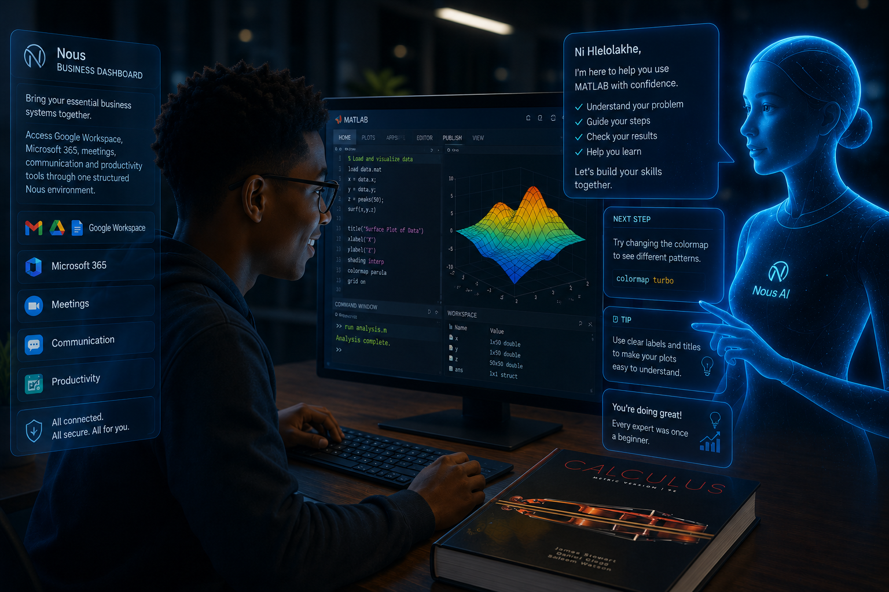
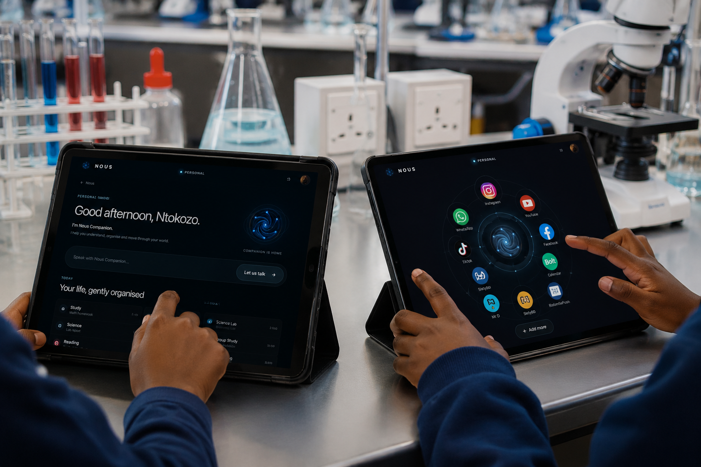
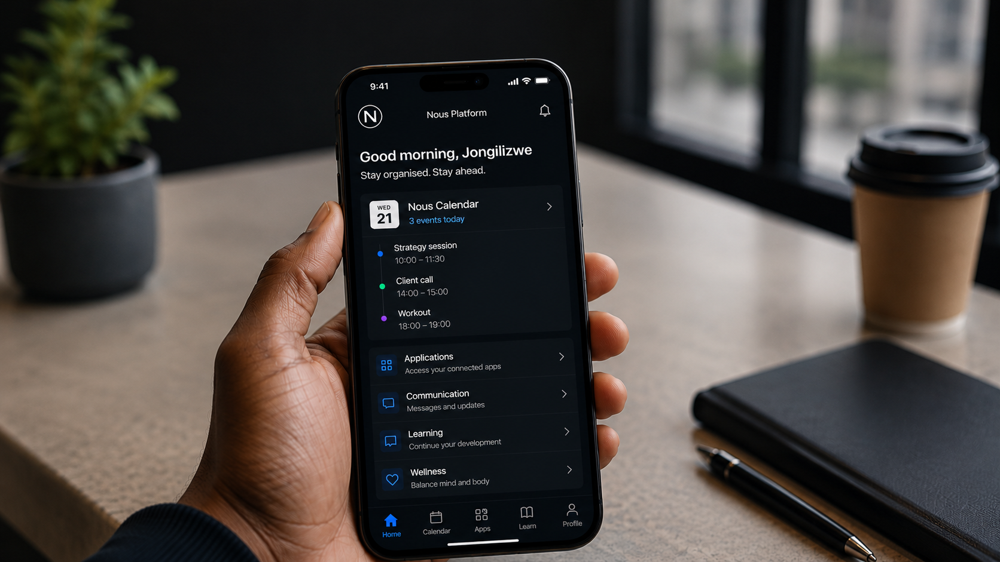
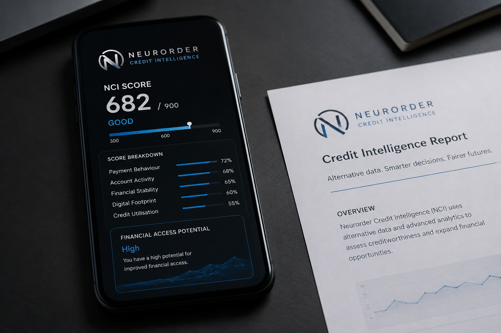
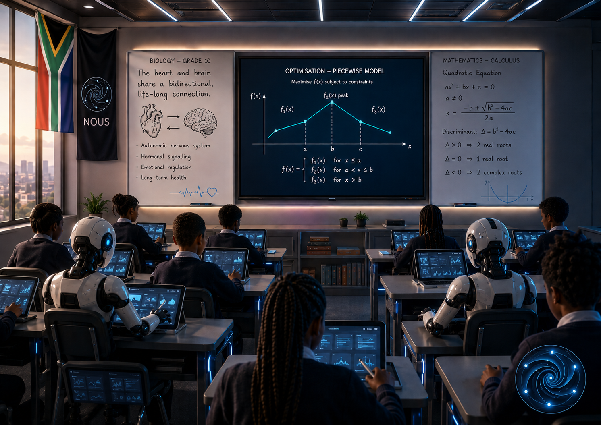

AI & Technology
Artificial intelligence, reasoning systems, machine learning and digital transformation.

NOUS INTELLIGENCE
Understand technology, education, business, finance, research and global developments through one organised intelligence environment.
Public news shows what Neurorder is watching. Members enter a personalised intelligence dashboard where signals become organised understanding.

WHAT NOUS WATCHES
Nous Intelligence follows developments that influence how Africa learns, works, builds and participates in the digital economy.
Artificial intelligence, reasoning systems, machine learning and digital transformation.
Digital public infrastructure, development intelligence and inclusive public systems.
Payments, financial access, banking behaviour and alternative credit-scoring systems.
Neurorder research, field observations, economic signals and community learning.
INSIDE NOUS NEWS
Nous News organises important developments across technology, finance, education, research and Africa’s digital future.
NOUS NEWS
Digital public infrastructure continues shaping access to identity, finance and public services.
MEMBER NEWS ACCESS
Create an account to access organised signals, member news, research updates and a personalised intelligence feed.
NOUS SPACES
Nous organises information around the spaces where people make decisions, develop skills and manage their daily lives.

BUSINESS INTELLIGENCE
Connect business systems, research, documents and operational intelligence through one organised workspace.

EDUCATION INTELLIGENCE
Access educational signals, organised learning resources, research and adaptive support for students and educators.

PERSONAL INTELLIGENCE
Organise schedules, applications, communication, personal development and the digital services you use every day.
FEATURED SIGNALS
A considered preview of the technology, financial and educational developments organised inside Nous Intelligence.
 TECHNOLOGY
TECHNOLOGY
Follow developments in artificial intelligence, public technology and digital infrastructure.
Continue inside Nous
FINANCEExplore financial inclusion, alternative credit scoring and emerging economic systems.
Continue inside Nous
EDUCATIONFollow educational technology, research and learning resources relevant to students.
Continue inside NousNOUS COMPANION
Nous Companion is being developed to help users reason through information, organise questions and understand topics across Business, Education, Research and everyday life.
BEGIN WITH NOUS
Create your Nous identity, enter the intelligence environment and choose the level of access that supports your needs.
Essential access for discovering Nous, reading public intelligence and creating your identity.
Accessible intelligence, learning support and practical tools for students and people beginning with Nous.
A structured intelligence environment for organisations, educators and developing professional teams.
Complete access across Nous Intelligence, Business, Education, Personal and advanced Companion experiences.
NEURORDER NOUS
Public intelligence shows what Neurorder is watching. Nous helps members understand, connect and act on that intelligence.